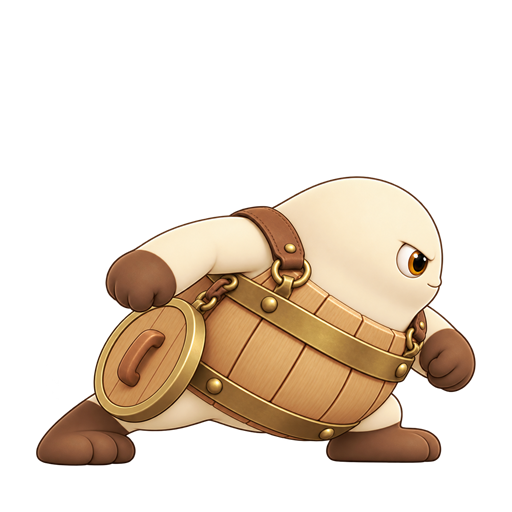
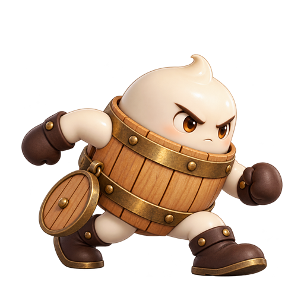
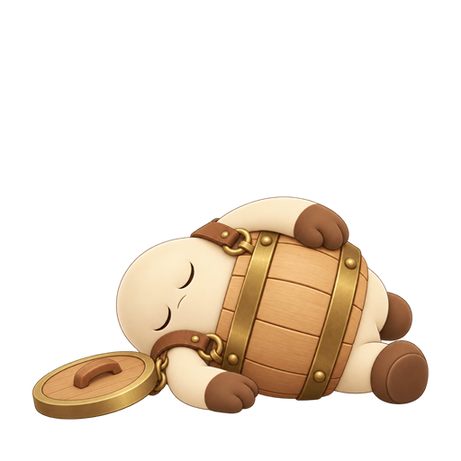

frame 0 · 0.45 s · boss_nai_tong_charge_telegraph_side_right_00.png
P4 W4 Boss 攻击姿势序列候选
v01 · 2026-10-30 · 桶盖低挂髋侧设计 · 8 组双姿势对拍样本
候选说明：八个非待机状态各有两张相邻姿势，用于检查方向、脚底和事件时间。`move` 为普通移动循环，`charge_attack` 循环到命中/落空；其余状态一次播放。当前仍为双姿势候选，动作中间帧、完整时序、三向一致性和美术逐帧修整待制作。落地冲击 VFX 保持独立。
charge_telegraph · side_right
once事件：boss_telegraph_charge0.90 second engineering warning split across two poses; frame 00 uses 0.45 s, frame 01 uses 0.45 s.

frame 1 · 0.45 s · boss_nai_tong_charge_telegraph_side_right_01.png
charge_attack · side_right
loop_until_result_event事件：boss_charge_hit, boss_charge_missedLoop the two stride key poses during the actual charge presentation; stop on result event. Event start hook remains to be confirmed.
frame 0 · 0.1 s · boss_nai_tong_charge_attack_side_right_00.png

frame 1 · 0.1 s · boss_nai_tong_charge_attack_side_right_01.png
lid_slam_telegraph · front
once事件：boss_telegraph_lid_slam1.05 second engineering warning split across two poses; frame 00 uses 0.525 s, frame 01 uses 0.525 s.
frame 0 · 0.525 s · boss_nai_tong_lid_slam_telegraph_front_00.png
frame 1 · 0.525 s · boss_nai_tong_lid_slam_telegraph_front_01.png
lid_slam_impact · front
once事件：boss_lid_slam_hit, boss_lid_slam_missedThe ground shock is a separate VFX. This pose follows the impact pose and carries no damage rule.
frame 0 · 0.12 s · boss_nai_tong_lid_slam_impact_front_00.png
frame 1 · 0.12 s · boss_nai_tong_lid_slam_impact_front_01.png
move · side_right
loop事件：Two-pose ordinary movement loop preview; lower speed than the charge stride.
frame 0 · 0.12 s · boss_nai_tong_move_side_right_00.png
frame 1 · 0.12 s · boss_nai_tong_move_side_right_01.png
hit · front
once事件：Short hit/recover pose proposal; exact duration follows the existing Boss presentation hook.
frame 0 · 0.1 s · boss_nai_tong_hit_front_00.png
frame 1 · 0.1 s · boss_nai_tong_hit_front_01.png
phase_two · front
once事件：boss_phase_two1.35 second engineering phase transition split across two poses; VFX remains separate.
frame 0 · 0.675 s · boss_nai_tong_phase_two_front_00.png
frame 1 · 0.675 s · boss_nai_tong_phase_two_front_01.png
death · front
once事件：Defeat ending duration is a visual proposal; confirm the Boss death presentation hook with engineering.

frame 0 · 0.18 s · boss_nai_tong_death_front_00.png
frame 1 · 0.18 s · boss_nai_tong_death_front_01.png
姿势和播放候选的逐帧文件、哈希、锚点及事件映射见 manifest v05。VFX 序列见 特效评审页。